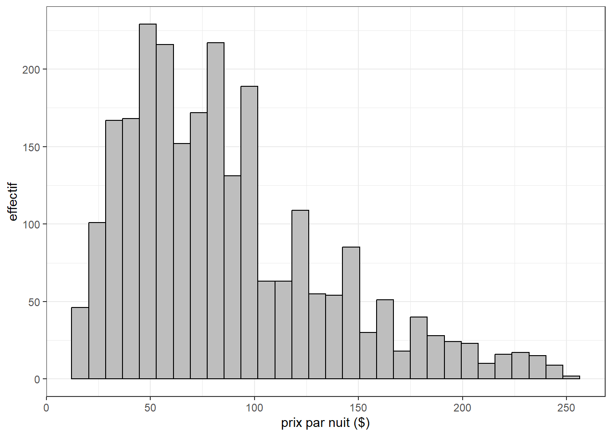
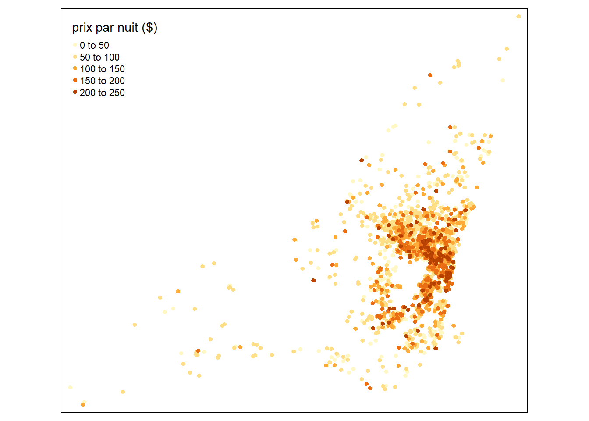
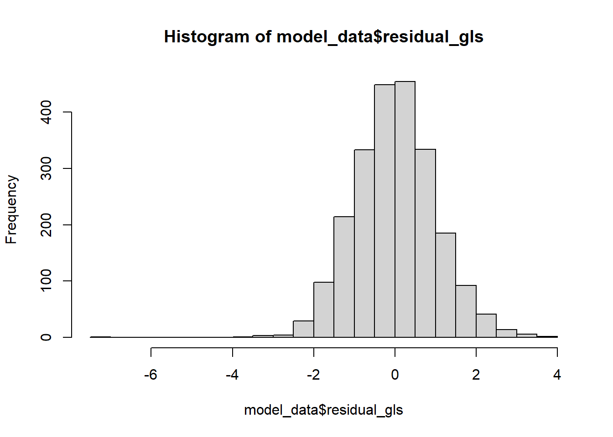
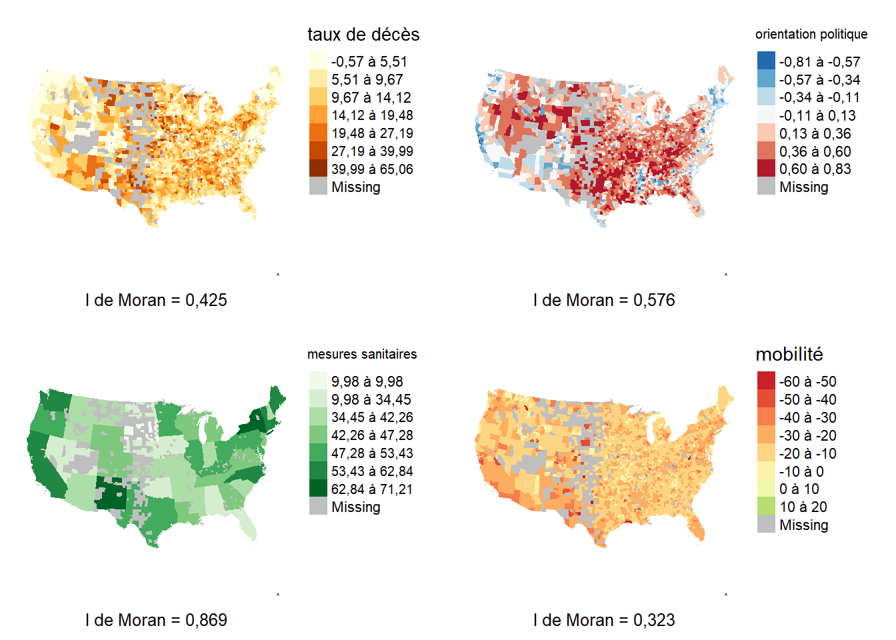
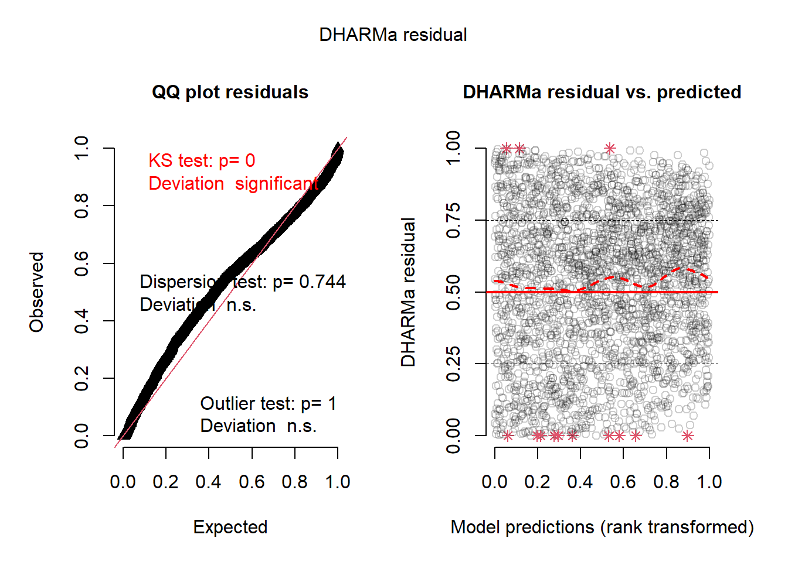
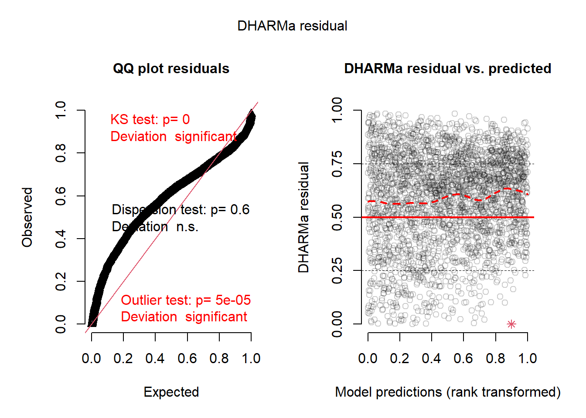

2 Modèles intégrant une structure de covariance spatiale (en cours de rédaction)
Dans ce chapitre, nous abordons un ensemble de modèles cherchant à corriger l’enjeu de la dépendance spatiale des observations dans un modèle de régression en exploitant la matrice de variance-covariance des résidus.
Pour rappel, dans le modèle OLS classique, plusieurs hypothèses sont formulées concernant les résidus. Ces derniers doivent être:
- normalement distribués,
- centrés sur 0,
- homoscédastiques,
- indépendants des les uns des autres
Dans ce chapitre, nous allons notamment modifier la dernière hypothèse pour tenir compte du fait que nous nous attendons à ce que des observations proches spatialement aient des résidus autocorrélés. En intégrant cette connaissance dans le modèle, nous pouvons réduire les biais dans l’estimation des paramètres du modèle et de l’incertitude associée à ces paramètres.
Un modèle OLS est formulé de la façon suivante :
\[ \begin{aligned} &Y = \beta_0 + \beta X + \epsilon\\ &\epsilon \sim N(0,\sigma^2) \end{aligned} \tag{2.1}\]
Selon cette formulation, les variables \(\mathbf{X}\) ne peuvent pas prédire exactement \(\mathbf{Y}\), mais seulement une valeur moyenne attendue de \(\mathbf{Y}\). Les valeurs réelles de \(\mathbf{Y}\) varient autours de cette moyenne attendue en suivant une distribution normale de variance \(\sigma^2\). Plus cette variance est grande, plus grande est notre incertitude et donc nos résidus. Cette valeur est unique et ainsi implique l’hypothèse d’homoscédasticité, soit que la variance soit la même pour tous les résidus. En d’autres termes, on ne s’attend pas à observer des résidus plus grands ou plus petits si la valeur de \(\mathbf{Y}\) est plus grande ou plus petite.
\(\sigma^2\) peut être présenté comme une valeur unique, mais aussi sous forme d’une matrice de variance-covariance :
\[ \begin{equation} \operatorname{cov}=\sigma^2\times\left(\begin{array}{cccc} 1 & 0 & \cdots & 0 \\ 0 & 1 & \cdots & \vdots \\ \vdots & \cdots & 1 & \vdots \\ 0 & \cdots & \cdots & 1 \end{array}\right) \end{equation} \tag{2.2}\]
La matrice ci-dessus indique que la variance attendue entre deux résidus d’observations différentes est de 0, et la covariance entre deux résidus d’une même observation est de \(1 \times \sigma^2\). La matrice dont la diagonale est remplie de 1 est appelée la matrice identitaire.
Les modèles de cette section vont modifier cette matrice de variance-covariance pour introduire la notion de dépendance spatiale. Ils corrigent donc le biais qu’elle introduit en se départissant de l’hypothèse d’indépendance des observations du modèle OLS.
2.1 Modèles des moindres carrés généralisés (GLS)
La méthodes des moindres carrés généralisés (GLS) est une méthode d’estimation qui a été développée pour ajuster les paramètres d’un modèle de régression lorsqu’il existe une corrélation différente de zéro entre les résidus du modèle (Aitken 1936).
Ce type de modèle est donc parfaitement adapté à l’analyse de données spatialisées puisqu’il permet de corriger très spécifiquement l’enjeu de dépendance spatiale, soit la présence d’autocorrélation spatiale dans les résidus.
2.1.1 Description du modèle GLS
Dans un modèle GLS, l’idée est de modifier la matrice de variance-covariance pour y encoder directement la dépendance spatiale qui existe entre les observations. L’idée est de remplacer les 0 de la matrice identitaire par des valeurs représentant le degré de corrélation spatiale entre les observations.
\[ \begin{equation} \operatorname{cov}=\sigma^2\times\left(\begin{array}{cccc} 1 & \lambda_{1-2} & \cdots & \lambda_{1-n} \\ \lambda_{1-2} & 1 & \cdots & \vdots \\ \vdots & \cdots & 1 & \vdots \\ \lambda_{1-n} & \cdots & \cdots & 1 \end{array}\right) \end{equation} \tag{2.3}\]
Notez que cette matrice est symétrique car si une observation i est corrélée avec une observation j, alors j est identiquement corrélée avec i.
Malheureusement, il est impossible d’ajuser un modèle avec une telle matrice si nous ne connaissons aucune des valeurs de corrélation entre les observations (\(\sigma^2_{i-j}\)). En effet, cela voudrait dire que le modèle devrait ajuster un nombre de paramètres égal au nombre de coefficients (plus l’intercept) plus chacune des valeurs \(\sigma^2_{i-j}\). Or, pour un jeu de donnée de taille n, cela représente \(\frac{n^2}{2}-n\) (la moitiée de la matrice moins la diagonale) paramètres! Ce chiffre grandit à mesure que n augmente, il est donc impossible de déterminer cette matrice à partir des données.
Nous pouvons réduire la complexité de ce problème en simplifiant la matrice de corrélation entre les observations. Plutôt que d’ajuster tous les paramètres, nous pouvons partir du principe que la corrélation entre deux observations dépend d’une fonction spécifique. Par exemple, dans un contexte spatial, il serait assez logique de partir du principe que deux observations proches ont une corrélation plus élevée que deux observations lointaines.
\[ \begin{equation} \operatorname{cov}=\sigma^2\times\left(\begin{array}{cccc} 1 & f(d_{1-2}) & \cdots & f(d_{1-n}) \\ f(d_{1-2}) & 1 & \cdots & \vdots \\ \vdots & \cdots & 1 & \vdots \\ f(d_{1-n}) & \cdots & \cdots & 1 \end{array}\right) \end{equation} \tag{2.4}\]
Avec \(f(d_{i-j})\) la fonction permettant de calculer la corrélation entre les obserations i et j séparées par une distance \(d_{i-j}\).
Il est cependant nécessaire que cette fonction f puisse s’ajuster aux données. En effet, parfois l’impact de la distance sera plus ou moins grand. f aura donc des paramètres qui contrôlent son comportement et qui pourront être ajustés dans le modèle. Nous nous retrouvons donc avec une structure de covariance capable de tenir compte de la notion d’autocorrélation spatiale entre les observations.
Il existe plusieurs fonctions utilisées classiquement pour construire des structures de covariance dans un modèle GLS spatial :
- La fonction Gaussienne
- La fonction Exponentielle
- La fonction Matern
- La fonction Sphérique
- La fonction Rationnelle quadratique
Ces différentes fonctions permettent toutes de modéliser que l’éloignement entre deux observations est associée avec une diminution de leur corrélation. Chacune dispose de différents paramètres influençant leur forme.
La figure figure 2.1 illustre ces 5 fonctions. Notons ici que toutes ces fonctions n’ont besoin que d’un seul paramètre appelé le range qui controle la vitesse à laquelle la corrélation diminue. Seule la fonction Matern a un second paramètre nommé \(\nu\) qui contrôle son niveau de lissage (ici fixé à 0.3).
Il est difficile de déterminer à l’avance qu’elle sera la fonction la plus adéquate pour un modèle, l’idéal est donc d’ajuster chaque modèle possible et ensuite de comparer les modèles obtenus pour voir lequel produit les meilleurs résultats.
La figure ci-dessous illustre différente réalisation d’un processus spatial suivant une structure de corrélation de type gaussienne. Les vignettes B, C et D de cette figure représentent des résidus normalement distribués, centrés sur zéro et suivant une structure de corrélation spatiale que peut capturer un modèle GLS. La première vignette avec range = 0 représente quant à elle des résidus normalement distribués, centrés sur zéro et sans structure d’autocorrélation spatiale.

Un des avantages importants du GLS est qu’il reste facile à interpréter. En effet, les coefficients peuvent être interprétés directement comme pour le modèle OLS. L’analyse du modèle peut simplement être complétée par un diagnostique spatial des résidus et une interprétation de la fonction de corrélation spatiale obtenue.
Spécificité d’un GLS
Puisque le modèle GLS modélise l’autocorrélation spatiale en se basant sur une fonction tenant compte des distances entre les observations, plusieurs points doivent être gardés à l’esprit quant à son utilisation:
- La distance entre les observations doit être une bonne représentation de l’espace géographique des données. Il faut donc privilégier ce type de modèle avec des données ponctuelles plutôt que polygonales et irrégulières car les distances entre les centroides de ces dernières ne représentent pas bien leur tailles variables.
- Les distances entres les observations doivent être symétriques.
- On dit que la prise en compte de l’autocorrélation spatiale est paramétrique car elle suit une fonction prédéterminée.
- La fonction modélisant l’autocorrélation spatiale est isotrope, elle ne tient pas compte des directions mais seulement des distances.
- Deux entités avec exactement la même localisation sont donc parfaitement corrélées entre elles.
Dans les faits, les packages ajustant des modèles GLS renvoient des erreurs lorsque des observations partagent exactement la même localisation.
2.1.2 Mise en oeuvre et analyse dans R
Pour illustrer la réalisation de différents modèles GLS, nous utilisons le jeu de données sur le prix des logements Airbnb (section 1.1.2) sur l’Île de Montréal. Ce jeu de donnée comporte 2500 logements airbnb pour lesquels nous connaissons un ensemble d’informations sur la nature du logement, son propriétaire ainsi que l’environnement à proximité du logement. Nous tentons ici de modéliser le prix de ces logements à la nuit.
library(sf, quietly = TRUE)
library(ggplot2, quietly = TRUE)
library(tmap, quietly = TRUE)
library(dplyr, quietly = TRUE)
library(ggpubr, quietly = TRUE)
library(cowplot, quietly = TRUE)
library(spdep, quietly = TRUE)
library(DHARMa, quietly = TRUE)
library(nlme, quietly = TRUE)
library(car, quietly = TRUE)
# Chargement des données
data_airbnb <- readRDS('data/airbnb.rds')
ggplot(data_airbnb) +
geom_histogram(aes(x = price), fill = 'grey', color = 'black', bins = 30) +
theme_bw() +
labs(x = 'prix par nuit ($)',
y = 'effectif'
)
tm_shape(data_airbnb[order(data_airbnb$price),]) +
tm_dots('price', title = 'prix par nuit ($)', size = 0.1)

Nous allons commencer par créer un modèle ne tenant pas compte de l’autocorrélation spatiale.
# structuration des données
data_airbnb$super_hote <- ifelse(data_airbnb$host_is_superhost == 't', 'YES', 'NO')
data_airbnb$prive <- factor(data_airbnb$private, levels = c('Chambre', 'Entier'))
data_airbnb$stationnement_gratuit <- factor(data_airbnb$Free_street_parking, levels = c('NO', 'YES'))
data_airbnb$jardin_ou_cours <- factor(data_airbnb$Garden_or_backyard, levels = c('NO', 'YES'))
data_airbnb$super_hote <- factor(data_airbnb$super_hote, levels = c('NO', 'YES'))
data_airbnb$metro_500m <- factor(data_airbnb$has_metro_500m, levels = c('NO', 'YES'))
# nous regarderons l'impact de 10 review supplementaires
data_airbnb$number_of_reviews <- data_airbnb$number_of_reviews / 10
model_data <- data_airbnb %>%
dplyr::select(any_of(c('price','private','stationnement_gratuit', 'jardin_ou_cours',
'bedrooms', 'super_hote',
'number_of_reviews','review_scores_rating','metro_500m',
'prt_veg_500m'))) %>%
filter(complete.cases(st_drop_geometry(.)))
model_data$log_price <- log(model_data$price)
XY <- st_coordinates(model_data)
model_data$X <- XY[,1]
model_data$Y <- XY[,2]
model1 <- lm(log_price ~ private + bedrooms +
stationnement_gratuit + jardin_ou_cours +
number_of_reviews + review_scores_rating + super_hote +
prt_veg_500m + metro_500m,
data = model_data
)
summary(model1)
Call:
lm(formula = log_price ~ private + bedrooms + stationnement_gratuit +
jardin_ou_cours + number_of_reviews + review_scores_rating +
super_hote + prt_veg_500m + metro_500m, data = model_data)
Residuals:
Min 1Q Median 3Q Max
-3.1696 -0.2913 -0.0123 0.2984 1.7758
Coefficients:
Estimate Std. Error t value Pr(>|t|)
(Intercept) 3.0629819 0.1750497 17.498 < 2e-16 ***
privateEntier 0.6541329 0.0217423 30.086 < 2e-16 ***
bedrooms 0.1812994 0.0115970 15.633 < 2e-16 ***
stationnement_gratuitYES 0.0096143 0.0205063 0.469 0.639227
jardin_ou_coursYES -0.0162075 0.0289968 -0.559 0.576258
number_of_reviews 0.0034418 0.0020083 1.714 0.086706 .
review_scores_rating 0.0064570 0.0017939 3.599 0.000326 ***
super_hoteYES 0.0369738 0.0228736 1.616 0.106139
prt_veg_500m -0.0041519 0.0009893 -4.197 2.81e-05 ***
metro_500mYES 0.0579132 0.0205640 2.816 0.004901 **
---
Signif. codes: 0 '***' 0.001 '**' 0.01 '*' 0.05 '.' 0.1 ' ' 1
Residual standard error: 0.4458 on 2250 degrees of freedom
Multiple R-squared: 0.4422, Adjusted R-squared: 0.4399
F-statistic: 198.2 on 9 and 2250 DF, p-value: < 2.2e-16Il apparait que notre premier modèle explique un peu plus que 45% de la variance du prix des logements.
model_data$residual_lm <- residuals(model1)
knn_list <- knearneigh(model_data, k = 10)
nb_list <- knn2nb(knn_list, sym = TRUE)
listw <- nb2listwdist(nb_list, model_data , style = 'W', type = 'idw', alpha = 2)
test <- moran.mc(model_data$residual_lm, listw, nsim = 999)
print(test)
Monte-Carlo simulation of Moran I
data: model_data$residual_lm
weights: listw
number of simulations + 1: 1000
statistic = 0.12418, observed rank = 1000, p-value = 0.001
alternative hypothesis: greaterNous avons cependant une autocorrélation spatiale résiduelle faible, mais significative avec un I de moran de 0.12.
plot(simulateResiduals(model1))
Les résidus semblent bien suivre une distribution normale et avoir une variance homogène.
Pour rêgler le problème de l’autocorrélation spatiale, nous allons utiliser la méthode des moindres carrés généralisés (GLS). Nous allons pour cela utiliser le package nlme qui offre quatre fonctions différentes pour créer une structure de covariance spatiale.
# exponentielle
modelExp <- gls(log_price ~ private + bedrooms +
stationnement_gratuit + jardin_ou_cours +
number_of_reviews + review_scores_rating + super_hote +
prt_veg_500m + metro_500m,
data = model_data,
correlation=corExp(form=~X+Y, nugget=T))
# gaussian
modelGau <- gls(log_price ~ private + bedrooms +
stationnement_gratuit + jardin_ou_cours +
number_of_reviews + review_scores_rating + super_hote +
prt_veg_500m + metro_500m,
data = model_data,
correlation=corGaus(form=~X+Y, nugget=T))
# spherique
modelSph <- gls(log_price ~ private + bedrooms +
stationnement_gratuit + jardin_ou_cours +
number_of_reviews + review_scores_rating + super_hote +
prt_veg_500m + metro_500m,
data = model_data,
correlation=corSpher(form=~X+Y, nugget=T))
# rationelle quadratique
modelRatio <- gls(log_price ~ private + bedrooms +
stationnement_gratuit + jardin_ou_cours +
number_of_reviews + review_scores_rating + super_hote +
prt_veg_500m + metro_500m,
data = model_data,
correlation=corRatio(form=~X+Y, nugget=T))Une fois que nous disposons de nos quatres modèles, nous devons les comparer pour retenir uniquement celui qui est le mieux ajusté aux données. Nous pouvons pour cela utiliser le AIC puisque ces modèles ont exactement la même structure.
AIC(modelExp, modelGau, modelSph, modelRatio) df AIC
modelExp 13 2854.930
modelGau 13 2854.639
modelSph 13 2854.667
modelRatio 13 2720.437struc <- modelRatio$modelStruct$corStruct
print(struc)Correlation structure of class corRatio representing
range nugget
768.0546254 0.8579333 Le modèle avec la structure de covariance basée que la fonction quadratique rationnelle est de loin le modèle qui obtient le AIC le plus bas. Son paramètre de range est de 768 ce qui signifie qu’au delà de 768m, la semi-variance sesse d’augmenter. Cette distance marque donc la limite au delà de laquelle les observations sont indépendantes spatialement.
La figure figure 2.6 permet de représenter la fonction de corrélation sous jacente à cette structure de covariance.
## Structure rationnelle quadratique
corRatio <- function(n, r, d){
return(
(1-n) / (1+(r/d)**2)
)
}
distances <- seq(0,1000,10)
df_corr <- data.frame(
distance = distances,
correlation = corRatio(n = 0.8579,
d = 768.05,
r = distances
)
)
ggplot(df_corr) +
geom_line(aes(x = distance, y = correlation)) +
theme_bw() +
labs(title = 'Structure de corrélation du modèle GLS')
Nous pouvons constater que le modèle prévoit une autocorrélation spatiale positive mais relativement faible pour les observations dans un rayon relativement limité. Il y a donc de forte chance que les conclusions de ce modèle soient très proches de celle du modèle linéaire simple.
Pour tester la distribution des résidus d’un modèle GLS, il est important d’utiliser les résidus normalisés qui tiennent compte de la structure de corrélation introduite dans le modèle Gałecki et al. (2013).
model_data$residual_gls <- residuals(modelRatio, type = "normalized")
knn_list <- knearneigh(model_data, k = 10)
nb_list <- knn2nb(knn_list, sym = TRUE)
listw <- nb2listwdist(nb_list, model_data , style = 'W', type = 'idw', alpha = 2)
test <- moran.mc(model_data$residual_gls, listw, nsim = 999)
print(test)
Monte-Carlo simulation of Moran I
data: model_data$residual_gls
weights: listw
number of simulations + 1: 1000
statistic = 0.023265, observed rank = 932, p-value = 0.068
alternative hypothesis: greaterNotre GLS a donc pu retirer l’autocorrélation qui restait dans les résidus du notre modèle linéaire original. Nous pouvons donc à présent vérifier la distribution de ses résidus.
[1] 1843 1218

La figure ?fig-glsresids indique que les résidus semblent suivre une distribution très proche d’une distribution normale. Il semble qu’une observation pourrait être considérée comme une valeur abhérrente.
subset(model_data, model_data$residual_gls < -6)Simple feature collection with 1 feature and 15 fields
Geometry type: POINT
Dimension: XY
Bounding box: xmin: 298524.8 ymin: 5039445 xmax: 298524.8 ymax: 5039445
Projected CRS: NAD83 / MTM zone 8
# A tibble: 1 × 16
price private stationnement_gratuit jardin_ou_cours bedrooms super_hote
<dbl> <chr> <fct> <fct> <int> <fct>
1 108 Entier NO NO 20 NO
# ℹ 10 more variables: number_of_reviews <dbl>, review_scores_rating <int>,
# metro_500m <fct>, prt_veg_500m <dbl>, geometry <POINT [m]>,
# log_price <dbl>, X <dbl>, Y <dbl>, residual_lm <dbl>, residual_gls <dbl>Il s’agit d’un logement un peu étrange disposant de 20 chambres pour seulement 108$ par nuit.
Nous pouvons à présenter comparer les coefficients obtenus par les deux modèles.
library(knitr, quietly = TRUE)
library(kableExtra, quietly = TRUE)
s1 <- summary(model1)
s2 <- summary(modelRatio)
df1 <- data.frame(s1$coefficients[,c(1,2,4)])
df2 <- data.frame(s2$tTable[,c(1,2,4)])
kable(cbind(df1, df2), digits = 3,
col.names = c('coeff.', 'err. std.', 'val. p',
'coeff.', 'err. std.', 'val. p')) %>%
kable_classic() %>%
add_header_above(c(' ' = 1, "modèle linéaire" = 3, "modèle GLS" = 3))|
modèle linéaire
|
modèle GLS
|
|||||
|---|---|---|---|---|---|---|
| coeff. | err. std. | val. p | coeff. | err. std. | val. p | |
| (Intercept) | 3.063 | 0.175 | 0.000 | 2.893 | 0.180 | 0.000 |
| privateEntier | 0.654 | 0.022 | 0.000 | 0.657 | 0.021 | 0.000 |
| bedrooms | 0.181 | 0.012 | 0.000 | 0.182 | 0.011 | 0.000 |
| stationnement_gratuitYES | 0.010 | 0.021 | 0.639 | 0.050 | 0.020 | 0.015 |
| jardin_ou_coursYES | -0.016 | 0.029 | 0.576 | 0.005 | 0.028 | 0.869 |
| number_of_reviews | 0.003 | 0.002 | 0.087 | 0.001 | 0.002 | 0.552 |
| review_scores_rating | 0.006 | 0.002 | 0.000 | 0.006 | 0.002 | 0.000 |
| super_hoteYES | 0.037 | 0.023 | 0.106 | 0.029 | 0.022 | 0.186 |
| prt_veg_500m | -0.004 | 0.001 | 0.000 | 0.000 | 0.002 | 0.809 |
| metro_500mYES | 0.058 | 0.021 | 0.005 | 0.029 | 0.028 | 0.295 |
Il est intéressant de constater que même en corrigeant une autocorrélation résiduelle relativement minime, nous obtenons des résultats assez différents pour ces deux modèles. Commençons par regarder les éléments faisant concensus pour les deux modèles.
- Un logement entier privé plutôt qu’un logement partagé a un impact positif et significatif sur le prix à la nuit. Les deux modèles donne un coefficient d’environ 0.654 sur l’échelle log. Ceci signifie qu’un logement privé coûte en moyenne 1.92 qu’un logement partagé.
- Chaque chambre supplémentaire fait augmenter le prix du logement d’environ 0.181 sur l’échelle log. Sur l’échelle linéaire, cela signifie qu’une chambre supplémentaire augmenter le prix moyen d’un logement de 19.88%.
- Un score de review plus élevé est aussi associé à un prix plus élevé. Une augmentation de 10 points de pourcentage du score est associé avec une augmentation du prix moyen du logement de 6.67%.
- Le fait pour l’hôte d’avoir le qualificatif de super hôte ou encore la présence d’un jardin ou d’une cours ne semblent pas avoir d’impact significatif.
Les deux modèles ont aussi des points de désaccord importants.
- Pour le modèle linéaire simple, le fait de dispoer d’un stationnement gratuit avec le logement a un impact non significatif. Pour le modèle GLS, le fait de disposer d’un stationnement contribue à augmenter le prix par nuit de 5.1% (p = 0.015).
- Le modèle linéaire simple indiquait que la densité de végétation dans un rayon de 500 réduisait le prix des logements. La présence d’une station de métro dans un rayon de 500m était quant à elle associée à une augmentation du prix des logements. Le modèle GLS indique que ces deux effets sont non significatifs. Ceci s’explique vraisemblablement par la prise en compte de l’espace par le modèle GLS.
2.2 Modèle d’autorégression conditionnelle (CAR)
Le modèle d’autorégression conditionnelle (CAR) modifie lui aussi la matrice de variance-covariance des résidus du modèle. Cependant, il n’est pas estimé par la méthode des moindres carrés généralisés, mais plutôt par maximum de vraissemblance ou avec des méthodes bayesiennes.
2.2.1 Description du modèle CAR
Le modèle CAR a été conçu pour travailler sur des entités polygonales en tenant compte de leur matrice de voisinage. Un modèle CAR peut donc être formulé de la façon suivante:
\[ \begin{aligned} &y = \beta_0 + \beta X + \epsilon\\ &\epsilon \sim N(0,\sigma^2(D - \rho W)^{-1}) \end{aligned} \tag{2.5}\]
Avec:
- \(W\) une matrice spatiale binaire symétrique de taille \(n \times n\), \(W_{ij} = 1\) indiquant que les observations \(i\) et \(j\) sont voisines
- \(D\) est une matrice indiquant pour chaque observation son nombre de voisin. Donc seule sa diagonale comporte des valeurs positives, toutes les autres cellules sont remplies de zéros.
- \(\rho\) est le paramètre d’autocorrélation spatiale. Il varie généralement entre 0 (modèle sans autocorrélation spatiale) et 1. Lorsqu’il augmente, les valeurs de la matrice de variance-covariance en dehors de la diagonale augmentent, indiquant une plus forte autocorrélation spatiale entre voisin.
Ce modèle formule donc une hypothèse de dépendance conditionnelle entre les résidus des observations voisines. Le modèle CAR s’inspire directement des chaînes et des champs de Markov dont il tire une propriété centrale: la valeur de l’effet spatial d’une obseration i ne dépend que de celles de ses observations voisines j.
Pour mieux visualiser l’impact du paramètre \(\rho\), nous pouvons visualiser à la figure ci-dessous différentes réalisation d’une distribution normale centrée sur zéro avec une structure de variance-covariance suivant un modèle CAR.

Comme le modèle GLS, le modèle CAR est relativement facile à utiliser car il est possible d’interprêter directement les coefficients du modèle. Le paramètre \(rho\) qui contrôle l’autocorrélation spatiale ne peut pas être interpréter directement car il dépend directement de la matrice spatiale W. On peut seulement indiquer si sa valeur est positive (autocorrélation spatiale positive) ou négative (autocorrélation spatiale négative). Il est généralement plus facile de cartographier le terme spatial du modèle CAR afin de se faire une idée de son degré d’autocorrélation spatiale.
2.2.2 Mise en oeuvre et analyse dans R
Pour illustrer l’utilisation du modèle CAR, nous utilisons le jeu de données sur les parts modales dans la région métropolitaine de Montréal (section 1.1.2). Ce jeu de données comprend trois variables mesurant respectivement la proportion des individus utilisant la voiture, le transport collectif ou un mode actif (marche ou vélo) comme mode de transport principal pour leurs déplacements domicile-travail en 2021 pour les secteurs de recensement (figure 1.2).
Tel qu’indiqué dans la section Section 6.5, nous utilisons ici la méthode du log des ratios (alr) pour analyser ces données compositionnelles. Plus exactement, nous modélisons le log entre le ratio des personnes utilisant principalement le transport en commun et des automobilistes.
library(sf, quietly = TRUE)
library(ggplot2, quietly = TRUE)
library(tmap, quietly = TRUE)
library(dplyr, quietly = TRUE)
library(spatialreg, quietly = TRUE)
library(DHARMa, quietly = TRUE)
# Chargement des données
load("data/Mtl.Rdata")
# Nous préparons ici les données en calculant les ratios
# remplaçant les 0 et calculant la transformation alr
data_mtl <- data_mtl %>%
mutate(
prt_tc = ifelse(prt_tc == 0, min(prt_tc[prt_tc>0]) ,prt_tc)
) %>%
mutate(
ratio = (prt_tc / prt_auto),
alr_val = log(prt_tc / prt_auto),
acs_idx_emp_tc_peak = acs_idx_emp_tc_peak * 100,
acs_idx_emp_pieton = acs_idx_emp_pieton * 100
)Nous pouvons à présent ajuster notre modèle CAR. Nous utilisons pour cela le package spatialreg. Nous devons utiliser une matrice spatiale binaire pour ajuster le modèle.
nbs <- poly2nb(data_mtl, queen = TRUE)
listw <- nb2listw(nbs, style = 'B', zero.policy = TRUE)
model_car <- spautolm(
alr_val ~ prt_minorite_vis + prt_monoparental +
prt_chomage + revenu_median + prt_personnes_faibles_revenu +
acs_idx_emp_tc_peak + acs_idx_emp_pieton,
data = data_mtl,
listw = listw,
family = 'CAR',
zero.policy = TRUE
)
listw2 <- nb2listw(nbs, style = 'W', zero.policy = TRUE)
moran.mc(residuals(model_car), listw = listw2, nsim = 999)
Monte-Carlo simulation of Moran I
data: residuals(model_car)
weights: listw2
number of simulations + 1: 1000
statistic = -0.0014516, observed rank = 502, p-value = 0.498
alternative hypothesis: greaterLe modèle CAR est bien parvenu à retirer l’aucorrélation spatiale des résidus.
df <- data.frame(
residus_car = model_car$fit$residuals
)
Mean <- mean(df$residus_car)
Sd <- sqrt(model_car$fit$s2)
ggplot(df) +
geom_histogram(aes(x=residus_car,y =..density..),bins=30,fill="white",color="black")+
stat_function(aes(x=residus_car),fun = dnorm, args = list(mean = Mean, sd = Sd),color="red",size=1) +
labs(x = 'résidus du modèle CAR', y = '')
Cependant, ses résidus ne suivent pas vraiment une distribution normale, il faudrait donc être prudent dans l’interprétation des résultats.
| Variable | Coefficient | exp(coefficent) | Valeur de p |
|---|---|---|---|
| Constante | -3,819 | 0,022 | 0,000 |
| prt_minorite_vis | 1,422 | 4,144 | 0,000 |
| prt_monoparental | 0,840 | 2,316 | 0,019 |
| prt_chomage | 1,311 | 3,712 | 0,108 |
| revenu_median | 0,003 | 1,003 | 0,226 |
| prt_personnes_faibles_revenu | 0,034 | 1,035 | 0,000 |
| acs_idx_emp_tc_peak | 0,051 | 1,052 | 0,000 |
| acs_idx_emp_pieton | -0,024 | 0,976 | 0,000 |
|
rho = 0.138 R2 de Nagelkerke = 0,891. |
Le coefficient d’autocorrélation spatial rho (appelé lambda par la fonction summary) est positif dans le modèle. Pour visualiser le terme spatial ajouté au modèle, on peut utiliser l’élément appelé signal_stochastic dans l’objet obtenu via la fonction spautolm. Ce terme correspond à la partie spatialement distribuée des résidus, à séparer du bruit blanc, soit les résidus distribués aléatoirement dans l’espace. Nous allons transformer ce terme avec la fonction log afin de pouvoir interprêter le résultat sur l’échelle originale des données, soit le ratio entre la part modale du transport collectif et de la voiture.
data_mtl$car_term <- exp(model_car$fit$signal_stochastic)
tm_shape(data_mtl) +
tm_polygons(col="car_term", n = 7,
style = "fisher",
midpoint = 1,
legend.format = list(text.separator = "à",
decimal.mark = ",",
big.mark = " ",
digits = 2),
palette = "-RdBu",
title = 'terme spatial du modèle CAR') +
tm_shape(data_mtl) +
tm_borders('darkgrey', lwd = 0.01) +
tm_layout(frame=FALSE, legend.outside = TRUE) +
tm_scale_bar(breaks = c(0,10))
Sur la carte ci-dessus, nous pouvons voir émerger des zones dans lesquels le modèle s’attend à voir des valeurs plus élevées ou plus faibles que ce qui est seulement capturé par les variables dépendantes. Plusieurs observations peuvent être tirées de cette carte. Premièrement, la couronne Nord est marquée par valeurs négatives avec une réduction du ratio entre les parts modales du transport collectif et la voiture allant 40 à 60 %. Une tendance similaire s’observe pour les arrondissement Saint-Laurent, Mont-Royal, West-Mount et Côte-Saint-Luc ainsi que le centre et le Sud de Laval. En revanche, on observe des valeurs plus élevées (multiplication par deux) du ratio à Rivière-des-Pairies-Pointe-aux-Tremble et Longueuil.
2.3 Modèles Généralisés à Effets Mixtes
Nous venons de voir qu’un modèle GLS ou un modèle CAR est construit en modifiant la structure de covariance d’un modèle linéaire classique assumant une distribution normale. Le principe de la structure de covariance est difficile à généraliser pour des distributions autres que la distribution normale. Dans ce contexte, il est difficile d’utiliser ces modèles pour des variables binaires, de comptages ou multinomiale et plus généralement d’introduire la prise en compte de l’espace dans un modèle GLM via la modification de la structure de covariance.
2.3.1 Du GLS et du CAR aux GLMM
Nous allons montrer ci-dessous comment les modèles GLS et CAR peuvent être reformulés comme des modèles GLMM. Notez que cette explication est relativement simplifiée car elle ne tient pas compte du fait que ces modèles utilisent différentes approches d’estimation.
Si nous reprenons notre formulation des modèles GLS et CAR, nous pouvons rassembler les deux formulations en une.
\[ \begin{aligned} &y = \beta_0 + \beta X + \epsilon\\ &\epsilon \sim N(0,\Omega) \end{aligned} \tag{2.6}\]
Avec \(\Omega\) une matrice de variance covariance pouvant être celle utilisée par un modèle GLS ou un modèle CAR. Comme nous l’avons vu avec le modèle CAR, les résidus se décomposent en deux partie, une première partie spatialement structurée et une seconde partie aléatoirement distribuée dans l’espace (le bruit blanc). Nous pouvons modifier notre équation pour séparer ces deux quantités.
\[ \begin{aligned} &y = \beta_0 + \beta X + \epsilon + \nu\\ &\nu \sim N(0,\Omega)\\ &\epsilon \sim N(0,\sigma)\\ \end{aligned} \tag{2.7}\]
Nous avons donc maintenant deux termes résiduels séparés. Nous pouvons reformuler le modèle ci-dessus pour qu’il se rapproche de la formulation habituel d’un GLM.
\[ \begin{aligned} &y \sim N(\mu,\sigma)\\ &\mu = \beta_0 + \beta X + \nu\\ &\nu \sim N(0,\Omega)\\ \end{aligned} \tag{2.8}\]
Notez bien que les deux formulations sont rigoureusement identiques. Le modèle stipule que y suit une distribution normale dont la moyenne \(\mu\) peut être prédite par une équation de régression. Cependant, ceci ne suffit pas à avoir exactement la valeur de y et une certaine variation existe autour de la moyenne prédite. Cette variation suit une distribution normale avec une variance \(\sigma\).
Nous aurions donc une variance inexpliquée et réellement aléatoire, et une variance structurée spatialement. Les effets de ces deux termes sont en moyenne 0 car si on regarde toutes les observations, les effets aléatoires et spatiaux s’annulent en moyenne.
À partir de ce point, il devient possible de changer le modèle pour travailler avec d’autres distributions que la distribution normale. Nous obtenons donc des GLMM avec un effet aléatoire spatialement structuré. Cette structure spatiale s’exprime au travers d’un terme suivant une distribution normale multivariée centrée sur 0 et dont la structure de covariance suit une forme déterminée telle que la fonction Gaussienne, Sphérique, Exponentielle, Matern ou Rationnelle quadratique ou une structure CAR.
Par exemple, pour une variable dépendante binaire, nous pourrions formuler le modèle suivant:
\[ \begin{aligned} &y \sim Binomial(p)\\ &g(p) = \beta_0 + \beta X + \zeta\\ &\zeta \sim N(0,\Omega) \\ &g(x) = log(\frac{x}{1-x}) \end{aligned} \tag{2.9}\]
Nous modélisons donc la variable y en formulant le postulat qu’elle suit une distribution binomiale, et nous prédisons la probabilité p d’observer l’évènement \(y=1\). Cette probabilité est conditionnée par notre équation de régression, transformée par la fonction de lien logistique. Cette dernière garantit que la prédiction du modèle sera comprise entre 0 et 1 (une probabilité). Finalement, l’autocorrélation spatiale est captée comme une variable latente suivant une distribution normale multivariée, centrée sur 0 et présentant une structure d’autocorrélation spatiale représentée par la matrice de covariance \(\Omega\).
Ce type de modèle est donc appelé un Modèle Généralisé à Effets Mixtes (GLMM). Son nom vient du fait que ce modèle combine deux types d’effets. Les effets fixes (soit les simples coefficients \(\beta\)) et des effets aléatoires (\(\zeta\)).
Modèles à effets mixtes
Pour plus de détail sur les modèles à effets mixtes et comment ils sont notamment utilisés pour tenir compte de structures hiérarchiques vous pouvez vous référex au chapitre sur les GLMM du livre Méthodes quantitatives en sciences sociales : un grand bol d’R (Apparicio et Gelb 2022).
2.3.2 Mise en oeuvre dans R
Nous illustrons ici comment un modèle GLMM peut être construit avec un effet spatial. Pour cela, nous allons tenté de reproduire les résultats de l’étude de Kaashoek et al. (2022). Dans cet article, les auteurs cherchent à déterminer quels sont les facteurs socio-économiques, politiques, et sanitaires qui ont été associés avec une prévalence de décès de COVID19 dans les différents contés des États-Unis. Les données de l’article ont été publiées en accès ouvert. Nous nous concentrons spécifiquement sur le modèle spatial appliqué à la troisième période d’étude.
L’objectif du modèle est donc de prédire le nombre de décès de COVID19 par conté pour la période octobre 2020 à février 2021. Il s’agit de la période pendant laquelle le nombre de cas était le plus élevé pour l’ensemble du pays. La première période correspond aux premiers pics épidémiques (férvier - mai 2020) et à l’apparition des premiers clusters de contagions. La seconde période a été marquée par l’adoption des premières mesures sanitaires et une poursuite de la contamination vers les états plus éloignés et moins peuplés.
Les variables intégrées peuvent être regroupées dans trois groupes:
- Les variables socio-démographiques. L’hypothèse originale étant que dans les milieux plus défavorisés et moins éduqués, l’épidémie a fait plus de victimes. De même, les personnes âgées étaient particulièrement à risque pendant la pendémie, ainsi que les personnes fragilisées vivant dans des établissements de soin.
-
income: le niveau de revenu médian ($) -
per_black: le pourcentage de la population étant afro-américaine -
per_hispanic: le pourcentage de la population étant hispanique -
per_atleast_hs: la part de la population disposant d’un dilôme de fin d’étude secondaire -
X65plus: part de la population ayant 65 ans et plus -
per_nursing: part de la population vivant dans des établissements de soin
- Les variables politiques. L’hypothèse originale est que certains partis politiques ont moins mis en place de mesures sanitaires ce qui a eu un impact sur le nombre de décès dans les contés. Les comportements de la population ont aussi été affectés par les orientations politiques menant à une adoption moins systématique par exemple des gestes barrières.
-
political_leaning: le niveau d’orientation politique, calculé comme la différence entre les votes républicains (votes pour Donald Trump) et les votes démocrates (votes pour Joe Biden), divisé par le total de votant. Une valeur positive indique un état avec une tendance plus républicaine et une valeur négative indique à état à tendance plus démocrate. Ces données proviennent des données électorale du New York Times de 2020. -
strict_p3: le niveau d’intensité de mise en place de mesures sanitaires. Il s’agit d’un score développé par le Oxford COVID-19 Government Response Tracker avec des valeurs allant de 0 (absence de mesures) à 100 (mesures les plus importantes). Ces données sont obtenues à l’échelle des États.
- Les variables de contagions. Plusieurs facteurs expliquent la propagation de la maladie tels que la proximité aux aéroports, les niveaux de mobilité dans les contés ou encore le port du masque.
-
density: la densité de population du conté -
google_p3: les niveaux de mobilité pour le motif travail selon les données de Google Mobility. Cet indicateur est comparatif par rapport à une tendance habituelle et est exprimé en pourcentage. Une mobilité plus importante serait associée à une moins bonne distanciation sociale entre individus de ménages différents. -
dist_to_airport: la distance à l’aéroport internationnal le plus proche. -
mask_usage_p3: estimation de la proportion des personnes portant le masque la plupart du temps ou tout le temps en public. Ces données proviennent d’une enquête effectuée par Facebook (Facebook’s COVID-19 symptom survey).
Les cartes ci-dessous illustrent la variable dépendante (taux de décès) et trois variables indépendantes.
library(sf, quietly = TRUE)
library(ggplot2, quietly = TRUE)
library(tmap, quietly = TRUE)
library(dplyr, quietly = TRUE)
library(spaMM, quietly = TRUE)
library(spdep, quietly = TRUE)
library(DHARMa, quietly = TRUE)
# Chargement des données
covid_data <- readRDS('data/chap02/covid_usa.rds')
# recodage des valeurs négatives pour le nombre de décès
covid_data$deaths_3 <- ifelse(covid_data$deaths_3 < 0,
0,
covid_data$deaths_3
)
# conservation uniquement des contés unique
covid_data <- covid_data %>%
group_by(FIPS) %>%
slice_head(n = 1)
# Matrice de de contiguïté selon le partage d'un nœud
queen_nb <- poly2nb(covid_data, queen = TRUE)
queen_w <- nb2listw(queen_nb, style = 'W', zero.policy = TRUE)
# Calcul du I de moran de la variable ratio
moran_i <- moran.mc(covid_data$rate_3,
listw = queen_w,
na.action = na.omit,
zero.policy = TRUE, nsim = 999)
# Texte pour la valeur du I de Moran
moran_text <- format(as.numeric(round(moran_i$statistic,3)) , decimal.mark =",")
# Cartographie de la variable
map1 <- tm_shape(covid_data) +
tm_fill(col="rate_3", n = 7,
style = "jenks",
legend.format = list(text.separator = "à",
decimal.mark = ",",
big.mark = " ",
digits = 2),
palette = "YlOrBr", title = 'taux de décès') +
tm_layout(frame=FALSE, legend.outside = TRUE) +
tm_scale_bar(breaks = c(0,10)) +
tm_xlab(paste0('I de Moran = ', moran_text))
# Calcul du I de moran de la variable
moran_i <- moran.mc(covid_data$political_leaning,
listw = queen_w,
na.action = na.omit,
zero.policy = TRUE, nsim = 999)
# Texte pour la valeur du I de Moran
moran_text <- format(as.numeric(round(moran_i$statistic,3)) , decimal.mark =",")
map2 <- tm_shape(covid_data) +
tm_fill(col="political_leaning", n = 7,
style = "equal",
midpoint = 0,
legend.format = list(text.separator = "à",
decimal.mark = ",",
big.mark = " ",
digits = 2),
palette = "-RdBu", title = 'orientation politique') +
tm_layout(frame=FALSE, legend.outside = TRUE) +
tm_scale_bar(breaks = c(0,10)) +
tm_xlab(paste0('I de Moran = ', moran_text))
# Calcul du I de moran de la variable
moran_i <- moran.mc(covid_data$strict_p3,
listw = queen_w,
na.action = na.omit,
zero.policy = TRUE, nsim = 999)
# Texte pour la valeur du I de Moran
moran_text <- format(as.numeric(round(moran_i$statistic,3)) , decimal.mark =",")
map3 <- tm_shape(covid_data) +
tm_fill(col="strict_p3", n = 7,
style = "jenks",
legend.format = list(text.separator = "à",
decimal.mark = ",",
big.mark = " ",
digits = 2),
palette = "Greens", title = 'mesures sanitaires') +
tm_layout(frame=FALSE, legend.outside = TRUE) +
tm_scale_bar(breaks = c(0,10)) +
tm_xlab(paste0('I de Moran = ', moran_text))
# Calcul du I de moran de la variable
moran_i <- moran.mc(covid_data$google_p3,
listw = queen_w,
na.action = na.omit,
zero.policy = TRUE, nsim = 999)
# Texte pour la valeur du I de Moran
moran_text <- format(as.numeric(round(moran_i$statistic,3)) , decimal.mark =",")
map4 <- tm_shape(covid_data) +
tm_fill("google_p3", n = 6,
legend.format = list(text.separator = "à",
decimal.mark = ",",
big.mark = " ",
digits = 0),
title = 'mobilité'
)+
tm_layout(frame=FALSE, legend.outside = TRUE) +
tm_scale_bar(breaks = c(0,10)) +
tm_xlab(paste0('I de Moran = ', moran_text))
tmap_arrange(map1, map2, map3, map4, ncol = 2, nrow = 2)
Pour nous rapprocher le plus possible de l’analyse effectuée par les auteurs, nous allons utiliser la même stratégie de modélisation de la variable dépendante. Plutôt que de modéliser directement le taux de décès, nous allons modéliser le nombre de décès selon une distribution Poisson en intégrant dans l’équation de régression le nombre d’habitants. Cette stratégie est appelée un offset et permet de modéliser directement le taux de décès via un modèle Poisson en contrôlant pour le fait que dans certain conté, une plus grande population va nécessaire produire un plus grand nombde de décés.
Nous commençons donc par ajuster un modèle non spatial.
data_mode1 <- na.omit(covid_data)
model_poisson <- glm(
deaths_3 ~ offset(log(population)) +
income + per_black + per_hispanic + per_atleast_hs +
per_nursing + X65plus +
political_leaning + strict_p3 +
mask_usage_p3 + google_p3 + dist_to_airport + density,
family = poisson(link = 'log'),
data = data_mode1
)Nous pouvons effectuer quelques diagnostics rapides sur ce premier modèle.
resid <- simulateResiduals(model_poisson)
plot(resid)
La figure figure 2.14 indique clairement un problème dans la distribution des résidus simulés du modèle. Ces derniers sont bien plus dispersés que ce que suppose un modèle Poisson. Ce phénomène peut s’expliquer par la présence d’autocorrélation spatiale dans les résidus (variance supplémentaire non prise en compte) mais aussi par une mauvaise spécification du modèle. Dans ce contexte, il convient de tester un autre distribution, soit la distribution négative binomiale.
model_nb <- fitme(
deaths_3 ~ offset(log(population)) +
income + per_black + per_hispanic + per_atleast_hs +
per_nursing + X65plus +
political_leaning + strict_p3 +
mask_usage_p3 + google_p3 + dist_to_airport + density,
family = spaMM::negbin(),
data = data_mode1
)
resid <- simulateResiduals(model_nb)
plot(resid)
La figure figure 2.15 indique une bien meilleure distribution des résidus. Nous pouvons donc maintenant nous intéresser à l’éventuelle autocorrélation spatiale des résidus. Notez que puisque notre modèle assume une distribution négative binomiale, nous utilisons les résidus de Pearson pour tester l’autocorrélation spatiale puisque ceux-ci sont standardisés et tiennent compte de l’hétéroscédasticité des résidus.
queen_nb <- poly2nb(data_mode1, queen = TRUE)
queen_w <- nb2listw(queen_nb, style = 'W', zero.policy = TRUE)
test <- moran.mc(residuals(model_nb, type = 'pearson'), listw = queen_w, nsim = 999)
print(test)
Monte-Carlo simulation of Moran I
data: residuals(model_nb, type = "pearson")
weights: queen_w
number of simulations + 1: 1000
statistic = 0.35745, observed rank = 1000, p-value = 0.001
alternative hypothesis: greaterNous pouvons constater que le I de Moran obtenu sur les résidus simulés est élevé 0,36. Nous devons donc opter pour un modèle contrôlant la dépendance spatiale. Nous allons ici tester deux modèles GLMM incluant un effet aléatoire suivant une structure de corrélation CAR et une structure de corrélation Matern.
library(spaMM)
# ajustement du modèle CAR
data_mode1$oid <- 1:nrow(data_mode1)
queen_nb <- poly2nb(data_mode1, queen = TRUE)
wmat <- matrix(0, ncol = length(queen_nb), nrow = length(queen_nb))
for(i in 1:length(queen_nb)){
wmat[i, queen_nb[[i]]] <- 1
}
model_car <- fitme(
deaths_3 ~ offset(log(population)) +
income + per_black + per_hispanic + per_atleast_hs +
per_nursing + X65plus +
political_leaning + strict_p3 +
mask_usage_p3 + google_p3 + dist_to_airport + density +
adjacency(1|oid),
data = st_drop_geometry(data_mode1),
adjMatrix = wmat,
family = spaMM::negbin()
)
test <- moran.mc(residuals(model_car, type = 'pearson'),
listw = queen_w, nsim = 999)
print(test)
Monte-Carlo simulation of Moran I
data: residuals(model_car, type = "pearson")
weights: queen_w
number of simulations + 1: 1000
statistic = -0.018803, observed rank = 56, p-value = 0.944
alternative hypothesis: greaterLe modèle GLMM avec un effet aléatoire de type CAR est donc parvenu à réduire significativement l’autocorrélation spatiale dans les résidus. Nous pouvons maintenant extraire cet effet aléatoire.
pred_df <- data_mode1
vars <- c('income', 'per_black', 'per_hispanic', 'per_atleast_hs',
'per_nursing', 'X65plus',
'political_leaning', 'strict_p3',
'mask_usage_p3',
'google_p3',
'dist_to_airport',
'density')
for(var in vars){
pred_df[[var]] <- 0
}
pred_df$population <- mean(pred_df$population)
pred_df$pred <- as.numeric(predict(model_car,
newdata = pred_df,
type = 'link'))
pred_df$pred <- exp(pred_df$pred - mean(pred_df$pred))
tm_shape(pred_df) +
tm_fill("pred", n = 7,
style = 'fisher',
midpoint = 1,
legend.format = list(text.separator = "à",
decimal.mark = ",",
big.mark = " ",
digits = 2),
title = 'effet aléatoire spatial',
palette = "-RdBu"
)+
tm_layout(frame=FALSE, legend.outside = TRUE, ) +
tm_scale_bar(breaks = c(0,10)) +
tm_credits("l'effet spatial a été centré sur 0 et mis en exponentiel",
position = c("LEFT", "BOTTOM"), size = 0.5)
Nous retrouvons sensiblement le même terme spatial que celui présenté par les auteurs sur le github sur lequel ils hébergents leurs données. Nous pouvons à présent interprêter les coefficients de notre modèle. Pour un modèle GLMM, le calcul des valeurs de p pose quelques problèmes car le nombre de degré de liberté est difficile à estimer. En effet, un effet aléatoire, tout particulièrement un effet aléatoire spatial, apporte un nombre de degré flou au modèle. Dans notre cas, considérant le grand nombre d’observations (plus de 2600), il serait acceptable de calculer des valeurs de p en utilisant l’approche classique et distribution T. Les deux autres alternatives sont les tests basés sur le rapport de vraissemblance ou uns approche par bootstrap pour obtenir des intervalles de confiances. Si cette dernière approche est la plus robuste, elle est beaucoup plus longue en temps de calcul.
df <- data.frame(summary(model_car, verbose = FALSE)$beta_table)
pvals <- anova(model_car)
df$exp <- exp(df$Estimate)
df$p_val <- pvals[,3]
knitr::kable(df[c(1,2,4,5)], digits = 3,
row.names = TRUE,
col.names = c('coeff', 'std', 'exp(coeff)', 'p.val'))| coeff | std | exp(coeff) | p.val | |
|---|---|---|---|---|
| (Intercept) | -3.256 | 1.025 | 0.039 | 0.001 |
| income | -0.009 | 0.001 | 0.991 | 0.000 |
| per_black | 0.003 | 0.001 | 1.003 | 0.007 |
| per_hispanic | 0.008 | 0.001 | 1.008 | 0.000 |
| per_atleast_hs | -0.005 | 0.003 | 0.995 | 0.058 |
| per_nursing | 0.560 | 0.031 | 1.751 | 0.000 |
| X65plus | 0.004 | 0.002 | 1.004 | 0.104 |
| political_leaning | 0.432 | 0.053 | 1.541 | 0.000 |
| strict_p3 | -0.008 | 0.002 | 0.992 | 0.000 |
| mask_usage_p3 | -0.032 | 0.010 | 0.969 | 0.002 |
| google_p3 | 0.004 | 0.002 | 1.004 | 0.007 |
| dist_to_airport | 0.001 | 0.000 | 1.001 | 0.012 |
| density | 0.000 | 0.000 | 1.000 | 0.604 |
Plusieurs constats peuvent être effectués:
- D’un point de vue social, le revenu est négativement associé avec le taux de décès. Cependant, cet effet est relativement faible. Un revenu médian supérieur de 1000$ est associé à une réduction du taux de décès de 0.87%. La concentration de personnes d’origines afro-américaines ou hispaniques est associée avec un plus au taux de décès. Pour ces deux groupes, une augmentation de 10 points de pourcentages de leur concetration correspond respectivement à des augmentation des taux de décès de 3.5% et 7.94%. Un des effets les plus forts est probalement la part de la population vivant dans des établissements de soin. Pour chaque augmentation d’un point de pourcentage de cette population est associée avec une augmentation de 75.13% du taux de décès.
- Il est intéressant de constater que l’alignement politique joue un rôle non négligeable. Tout choses étant égales par ailleurs, un conté à tendance républicaine (+0.5) plutôt que démocrate (-0.25) a ainsi un taux de décès 38.32% plus élevé.
À ce stade, nous pourrions envisager une autre structure spatiale pour notre effet aléatoire. En l’occurence, le package spaMM permet notamment d’utiliser une structure de covariance de type Matern ou Cauchy basées sur les distances entre les observations. Considérant que les contés américains sont relativement uniformément distribués, nous pourrions tester cette approche et la comparer au modèle CAR.
Pour spécifier la structure de corrélation spatiale, le package spaMM à besoin des coordonnées des observations en longitude et latitude. Nous reprojectons donc nos observations dans le système de référence 4326.
# extraction des coordonnées XY des centroids des contés
lonlat <- data_mode1 %>%
st_point_on_surface() %>%
st_transform(4326) %>%
st_coordinates()
data_mode1$longitude <- lonlat[,1]
data_mode1$latitude <- lonlat[,2]Attention, le code ci-dessous prend pas mal de temps pour s’exécuter.
# ajustement du modèle avec structure de covariance Matern
model_matern <- fitme(
deaths_3 ~ offset(log(population)) +
income + per_black + per_hispanic + per_atleast_hs +
per_nursing + X65plus +
political_leaning + strict_p3 +
mask_usage_p3 + google_p3 + dist_to_airport + density +
Matern(1| longitude+latitude),
data = st_drop_geometry(data_mode1),
family = spaMM::negbin(),
control.HLfit=list(NbThreads=10)
)
# ajustement du modèle avec structure de covariance Cauchy
model_cauchy <- fitme(
deaths_3 ~ offset(log(population)) +
income + per_black + per_hispanic + per_atleast_hs +
per_nursing + X65plus +
political_leaning + strict_p3 +
mask_usage_p3 + google_p3 + dist_to_airport + density +
Cauchy(1| longitude+latitude),
data = st_drop_geometry(data_mode1),
family = spaMM::negbin(),
control.HLfit=list(NbThreads=10)
)test <- moran.mc(residuals(model_matern, type = 'pearson'),
listw = queen_w, nsim = 999)
print(test)
Monte-Carlo simulation of Moran I
data: residuals(model_matern, type = "pearson")
weights: queen_w
number of simulations + 1: 1000
statistic = -0.078253, observed rank = 1, p-value = 0.999
alternative hypothesis: greatersimresid <- simulateResiduals(model_matern)
plot(simresid)
Pour le modèle avec la structure de corrélation Matern, La fonction moran.mc semble bien indiquer que nous n’avons plus d’autocorrélation spatiale dans les résidus. Cependant, les résidus semblent moins bien distribués que lorsque nous utilisons la structure CAR pour notre effet aléatoire.
test <- moran.mc(residuals(model_cauchy, type = 'pearson'),
listw = queen_w, nsim = 999)
print(test)
Monte-Carlo simulation of Moran I
data: residuals(model_cauchy, type = "pearson")
weights: queen_w
number of simulations + 1: 1000
statistic = -0.09147, observed rank = 1, p-value = 0.999
alternative hypothesis: greatersimresid <- simulateResiduals(model_cauchy)
plot(simresid)
Pour le modèle avec la structure de corrélation Cauchy,les résidus semblent encore moins bien distribués. Il faudrait donc probablement éviter de se fier à ce troisième modèle.
La figure figure 2.17 illustre la fonction de corrélation ajustée pour les deux modèles pour leurs effets aléatoires. Nous représentons notamment la corrélation selon la distance, mais aussi une illustration en montrant la corrélation attendue en prenant un conté de référence. Notez ici que le package spaMM applique une transformation aux distances lors du calcul de la matrice de covariance spatiale de l’effet aléatoire. Pour retrouver ces distances, il est nécessaire de passer par la fonction make_scaled_dist.
# récupération des distances
dists_4326 <- make_scaled_dist(lonlat, rho = 1, return_matrix = TRUE)
dists_proj <- data_mode1 %>%
st_point_on_surface() %>%
st_transform(4326) %>%
st_distance() %>%
as.matrix() %>%
as.numeric()
dim(dists_proj) <- dim(dists_4326)
df_corr <- data.frame(
dists = dists_proj[,1] / 1000,
dists_4326 = dists_4326[,1]
)
# calcul des valeurs de corrélations basées sur les distances
df_corr$corr_matern <- MaternCorr(df_corr$dists_4326,
nu = model_matern$corrPars[[1]]$nu,
rho = model_matern$corrPars[[1]]$rho)
df_corr$corr_cauchy <- CauchyCorr(df_corr$dists_4326,
rho = model_cauchy$corrPars[[1]]$rho,
longdep = model_cauchy$corrPars[[1]]$longdep,
shape = model_cauchy$corrPars[[1]]$shape)
# représentation des fonctions
plot_corr <- ggplot(df_corr) +
geom_line(aes(x = dists, y = corr_matern, color = 'Matern'))+
geom_line(aes(x = dists, y = corr_cauchy, color = 'Cauchy'))+
theme_bw() +
scale_color_manual(values = c(
'Matern' = '#669bbc',
'Cauchy' = '#c1121f'
)) +
labs(x = 'distance (km)', y = 'corrélation', colour = 'structure de \ncorrélation')
# représentation cartographique des fonctions
data_mode1$corr_mat <- df_corr$corr_matern
data_mode1$corr_cau <- df_corr$corr_cauchy
map_corr_mat <- tm_shape(data_mode1) +
tm_fill("corr_mat",
style = 'fixed',
breaks = c(0,0.2,0.4,0.6,0.8, 1),
legend.format = list(text.separator = "à",
decimal.mark = ",",
big.mark = " ",
digits = 1),
title = 'corrélation Matern',
palette = "Blues",
legend.is.portrait = TRUE
)+
tm_layout(frame=FALSE,
legend.outside = TRUE,
legend.outside.position = 'bottom') +
tm_scale_bar(breaks = c(0,10))
map_corr_cau <- tm_shape(data_mode1) +
tm_fill("corr_cau",
style = 'fixed',
breaks = c(0,0.2,0.4,0.6,0.8, 1),
legend.format = list(text.separator = "à",
decimal.mark = ",",
big.mark = " ",
digits = 1),
title = 'corrélation Cauchy',
palette = "Reds",
legend.is.portrait = TRUE
)+
tm_layout(frame=FALSE,
legend.outside = TRUE,
legend.outside.position = 'bottom') +
tm_scale_bar(breaks = c(0,10))
map_corr_cau
plot_corr
map_corr_mat


Nous pouvons observer que la fonction de corrélation Cauchy est probalement peu adaptée à nos données. Elle semble bien trop lisser les résultats en autorisant des corrélations importantes entre des contés éloignés.
Pour la fonction Matern, la corrélation est réduite de moitiée au delà de 260 km, et tombe à zéro aux alentours de 2000 km.
Pour visualiser la contribution de ces effets aléatoires dans les modèles, nous pouvons les cartographier. Puisque les structures de corrélation Matern et Cauchy se basent sur des coordonnées géographiques, elle est de nature continue. Nous allons donc les représenter comme des variables continues spatialement. Notez également que puisque notre modèle a une fonction de lien log, nous pouvons prendre ce terme spatial centré sur 0 et le transformer avec la fonction exp. Ainsi, nous verrons l’impact de l’espace sur le taux d’infection en effet multiplicatif. Les valeurs proches de 1 indiquerons donc les contés des États-Unis dans lesquels la tendance spatiale est moyenne. Des valeurs supérieure à un indiqueront des contés dans lesquels toutes choses étant égales par ailleurs, le taux d’infection a été plus élevé.
library(terra)
# création d'un dataframe de prédiction
# puisque la prédiction sera continue, nous créons des points à
# intervalles réguliers sur le territoire. Toutes les variables
# indépendantes sont remplacées par des 0 pour retirer leur contribution
# dans les prédictions et ne garder que l'effet spatial
bbox <- st_bbox(data_mode1)
pred_df <- expand.grid(
prt_minorite_vis = 0,
prt_monoparental = 0,
revenu_median = 0,
acs_idx_emp_tc_peak = 0,
acs_idx_emp_pieton = 0,
X = seq(bbox[[1]], bbox[[3]], 25000),
Y = seq(bbox[[2]], bbox[[4]], 25000)) %>%
st_as_sf(coords = c('X', 'Y'), crs = st_crs(data_mode1), remove = FALSE) %>%
st_transform(4326)
# nécessiter ici d'extraire les longitudes et latitudes pour le package spaMM
lonlat <- st_coordinates(pred_df)
pred_df$longitude <- lonlat[,1]
pred_df$latitude <- lonlat[,2]
# remplacement par des 0 de toutes les variables indépedantes
vars <- c('income', 'per_black', 'per_hispanic', 'per_atleast_hs',
'per_nursing', 'X65plus',
'political_leaning', 'strict_p3',
'mask_usage_p3',
'google_p3',
'dist_to_airport',
'density')
for(var in vars){
pred_df[[var]] <- 0
}
# l'offset population est remplacé par une valeur unique
pred_df$population <- mean(data_mode1$population)
# prédiction avec le modèle Matern
pred_df$matern_re <- as.numeric(predict(model_matern,
newdata = st_drop_geometry(pred_df),
type = 'link'))
# on centre la prédiction pour retirer l'effet de l'intercept et de l'offset.
# pour rappel, l'effet alétoire est bien centré sur 0 dans la spécification du
# modèle
pred_df$matern_re <- exp(pred_df$matern_re - mean(pred_df$matern_re))
pred_df$cauchy_re <- as.numeric(predict(model_cauchy,
newdata = st_drop_geometry(pred_df),
type = 'link'))
pred_df$cauchy_re <- exp(pred_df$cauchy_re - mean(pred_df$cauchy_re))
# conversion des objets obtenus en raster
raster_cauchy <- pred_df %>%
st_drop_geometry() %>%
select(any_of(c("X", "Y", "cauchy_re"))) %>%
as.matrix() %>%
rast(type = 'xyz')
raster_matern <- pred_df %>%
st_drop_geometry() %>%
select(any_of(c("X", "Y", "matern_re"))) %>%
as.matrix() %>%
rast(type = 'xyz')
crs(raster_cauchy) <- crs(data_mode1)
crs(raster_matern) <- crs(data_mode1)
# cartograhie des effets spatiaux
usa <- maps::map("state", fill=TRUE, plot =FALSE) %>%
st_as_sf() %>%
st_transform(st_crs(data_mode1))
cauchy_re_map <- tm_shape(mask(raster_cauchy,usa)) +
tm_raster(palette = '-RdBu',
style = "fisher",
midpoint = 1,
legend.format = list(text.separator = "à",
decimal.mark = ",",
big.mark = " ",
digits = 2),
title = 'Effet aléatoire Cauchy'
) +
tm_shape(data_mode1) +
tm_borders('darkgrey', lwd = 0.01) +
tm_layout(frame=FALSE, legend.outside = TRUE)
matern_re_map <- tm_shape(mask(raster_matern,usa)) +
tm_raster(palette = '-RdBu',
style = "fisher",
midpoint = 1,
legend.format = list(text.separator = "à",
decimal.mark = ",",
big.mark = " ",
digits = 2),
title = 'Effet aléatoire Matern'
) +
tm_shape(data_mode1) +
tm_borders('darkgrey', lwd = 0.01) +
tm_layout(frame=FALSE, legend.outside = TRUE)
tmap_arrange(cauchy_re_map, matern_re_map, ncol = 1, nrow = 2)
Les deux cartes sont extrèmement similaires et uniquement des changements marginaux peuvent être observés
Pour terminer, nous pouvons comparer les résultats de nos trois modèles GLMM.
models <- list(model_car, model_matern, model_cauchy)
aics <- lapply(models, spaMM::AIC.HLfit, verbose = FALSE)
aics <- t(do.call(rbind, aics))
colnames(aics) <- c('CAR', 'MATERN', 'CAUCHY')
knitr::kable(aics, digits = 0,
row.names = TRUE)| CAR | MATERN | CAUCHY | |
|---|---|---|---|
| marginal AIC: | 23087 | 22773 | 22768 |
| conditional AIC: | 19764 | 22307 | 22361 |
| dispersion AIC: | 23061 | 22747 | 22742 |
| effective df: | 548 | 1923 | 2125 |
Le package spAMM donne plusieurs version du AIC pour la sélection de modèle. Le AIC conditionnel et le AIC marginal ont des visées différentes et peuvent être privilégiés selon les objectifs de l’étude.
- Le AIC marginal considère que les effet aléatoires ne sont pas observés et sont donc marginalisés dans son calcul. Il est préférable de l’utiliser lorsque l’on s’intéresse avant tout aux effets fixes du modèle ou lorsque les prédictions porteront sur de nouvelles observations qui ne faisaient pas partie des données originales.
- Le AIC conditionnel considère que les effets aléatoires ont été observés, son calcul est donc conditionné par les valeurs des effets aléatoires. Il est préférable de l’utiliser si les prédictions futures se feront sur des entités déjà observées et dont l’effet propre est connu. Typiquement, lorsque des splines pénalisées sont intégrées dans un modèle pour faire du lissage et sont estimées comme des effets aléatoires, le AIC conditionnel est préféré (Säfken et al. 2021).
Dans notre contexte, les effets aléatoires spatiaux reposent tous sur l’hypothèse d’autocorrélation spatiale et impose une forme de lissage dans l’espace. De plus, le nombre de contés est limité. Il serait donc plus pertinent de se baser sur le AIC conditionnel pour déterminer le meilleur modèle. Le modèle CAR semble donc le mieux ajusté. Rappelons qu’il s’agit aussi du modèle pour lequel les résidus simulés étaient le mieux distribués.
library(kableExtra)
# extraction des effets fixes du modèle CAR
df <- data.frame(summary(model_car, verbose = FALSE)$beta_table)
pvals <- anova(model_car)
df$exp <- exp(df$Estimate)
df$p_val <- pvals[,3]
# extraction des effets fixes du modèle avec
df2 <- data.frame(summary(model_matern, verbose = FALSE)$beta_table)
pvals <- anova(model_matern)
df2$exp <- exp(df2$Estimate)
df2$p_val <- pvals[,3]
df_total <- cbind(
df[,c(4,5)],
df2[,c(4,5)]
)
knitr::kable(df_total, digits = 3,
row.names = TRUE,
col.names = c('exp(coeff)', 'p.val','exp(coeff)', 'p.val')
) %>%
add_header_above(.,c(' ' = 1,'CAR'=2,'Matern'=2))| exp(coeff) | p.val | exp(coeff) | p.val | |
|---|---|---|---|---|
| (Intercept) | 0.039 | 0.001 | 0.023 | 0.028 |
| income | 0.991 | 0.000 | 0.991 | 0.000 |
| per_black | 1.003 | 0.007 | 1.004 | 0.004 |
| per_hispanic | 1.008 | 0.000 | 1.004 | 0.029 |
| per_atleast_hs | 0.995 | 0.058 | 0.993 | 0.011 |
| per_nursing | 1.751 | 0.000 | 1.634 | 0.000 |
| X65plus | 1.004 | 0.104 | 1.007 | 0.003 |
| political_leaning | 1.541 | 0.000 | 1.488 | 0.000 |
| strict_p3 | 0.992 | 0.000 | 0.992 | 0.000 |
| mask_usage_p3 | 0.969 | 0.002 | 0.977 | 0.189 |
| google_p3 | 1.004 | 0.007 | 1.007 | 0.000 |
| dist_to_airport | 1.001 | 0.012 | 1.000 | 0.257 |
| density | 1.000 | 0.604 | 1.000 | 0.786 |
Il est intéressant de constater que les deux modèles partagent essentiellement les mêmes conclusions à quelques exceptions prêt. Selon le modèle utilisant la structure CAR pour son effet aléatoire, l’effet du pourcentage de personnes de 65 ans et plus est non-significatif. Pour le modèle avec une stucture Matern, la valeur de p est inférieure à 0,05 avec un coefficient en expontentielle de 1.007. Ainsi, une augmentation de 10 points de pourcentage sur cette variable correspondrait à une augmentation de 7.44% du taux de décès. À contrario, l’effet du port du masque est significatif dans le modèle avec la structure de corrélation CAR, mais pas dans celui avec la corrélation Matern. Cependant, rappelons que la fiabilité de cette données est assez limitée. De plus, elle a une variation assez faible allant de 85% à 100%. Une augmentation de 5 points de pourcentage serait associé avec une réduction du taux de décès de 14.64%
Le choix du modèle est donc crucial pour l’interprétation des résultats. Puisque l’emphase dans l’analyse porte avant tout sur les effets fixes (l’effet aléatoire spatial est uniquement utilisé pour réduire la corrélation spatiale des résultats), alors privilégier le modèle avec le meilleur AIC marginal est aussi un choix qui se justifierait, en l’occurence le modèle avec la structure de corrélation Matern.
2.4 Quiz de révision
2.5 Exercices de révision
Exercice 1. À compléter
Complétez le code ci-dessous.
Correction à la section 11.2.1.
Exercice 2. À compléter
Complétez le code ci-dessous.
Correction à la section 11.2.2.
Exercice 3. À compléter
Complétez le code ci-dessous.
Correction à la section 11.2.3.